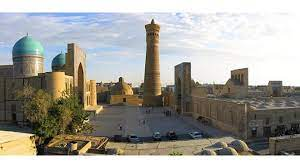

Buxoro o‘zida qadimiy urf-odatlarning ko‘p asrlik tarixini Islom dini bilan mujassamlashtirdi. Hayratlanarli darajada donolik, muqaddaslik va ta’lim berish muhitiga ega bo‘lgan shahar. Bir marta ushbu shaharda bo‘lganingizda, o‘zingizni go‘yo boshqa dunyoda va boshqa sayyorada bo‘lgandek his etasiz. Madaniy, diniy, etnik sivilizatsiyalarning betakror aralashuvi Buxoroni unutilmas taassurotlar shahriga aylantirdi.
Buxoro viloyati hududida zardushtiylar, xristianlar, yahudiylar, buddistlar yashagan. 9-asr oxirida Buxoro O‘rta Osiyodagi eng muhim Islom va madaniyat markazlaridan biriga aylandi. Bir necha asrlar davomida bu yerga sayohatchilar, ziyoratchilar, va’zxonlar, tadqiqotchilar kelishgan. Buxoro – ilmiy, diniy va falsafiy bilimlar makonidir.Bu yerda o‘z davrining din arboblari va ilg‘or insonlari yashab, tahsil olishgan: Alisher Navoiy, Abu Ali ibn Sino, Al Buxoriy va boshqalar
respublikaning haqiqiy boyligiga aylangan. Ular tasavvuf ma’naviy va falsafiy ta’limotlarining eng taniqli tarafdorlari edilar.
Bu zaminda ular haqida xotiralar saqlanib qolgan. Ular moddiy va nomoddiy yodgorliklarni yaratdilar, kashfiyotlar
qildilar, aql bovar qilmaydigan darajada go‘zal madrasa va masjidlarini qurdilar.Birinchi tarixiy yozuvlar X asrda Narshaxiy tomonidan "Buxoro tarixi"da yozilgan. U o‘z asarida hozirgi kunda ham ko‘rish mumkin bo‘lgan qadimiy Ark qal’asini tasvirlab bergan. Samarqand singari Buxoro ham ko‘p asrlar davomida bitta bosqinchidan boshqasiga o‘tgan.
Buxoroning har bir fuqarosi o‘z hukmdorlarini yaxshi eslaydi va biladi.Iskandar Maqduniy zabt etganidan keyin bu yerda Yunon-Baqtriya davlati shakllandi. Keyinchalik Kushon, Eftaliylar davlati, Turk xoqonligi, Arab xalifaligi, Somoniylar, Qoraxoniylar, Qoraxitoylar va Xorazmshohlar davlatlari vujudga keldi.XIII
asrda mo‘g‘ullar istilosi ro‘y berdi. Afsonaga ko‘ra, Chingizxon Buxoroni zabt etib, uning asosiy minorasi Poi-Kalonni ko‘zdan kechirish uchun u tomon yo‘l olgan.
U boshini ko‘taradi va jang dubulg‘asi boshidan tushib ketadi. Bosqinchi unga engashib, so‘ng jilmayib: "Men Buxoroni zabt etdim, lekin minorasi oldida egildim", – deb aytadi va minorani buzmaslik haqida buyruq beradi.Amir Temur va Temuriylar hukmronligi davrida Buxoro gullab-yashnadi. Bu davrda shahar jannat bog‘iga aylandi.
Endi bu muqaddas Buxoro yoki Buxoroi sharifdir.XVI asrdan XX asrning boshlariga qadar Buxoro xonlikning poytaxti bo‘lgan. Bu yerda Shayboniylar va Ashtarxoniylar singari mashhur sulolalar hukmronlik qilgan.
Bu vaqtda shahar o‘zining maksimal rivojlanishiga erishdi. Bu yerda ilmiy bilimlar va madaniy hayot rivojlandi. Shahar zamonaviy ko'rinishga ega bo‘ldi. Hozirgacha bizni hayratga soladigan yirik me'moriy ansambllar va majmualar qurildi.Ulashish
